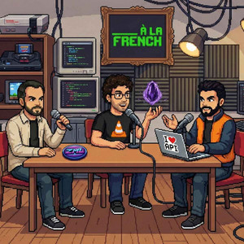
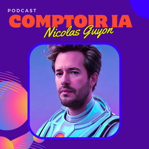
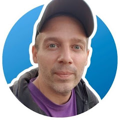
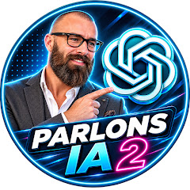

Des chaînes pour comprendre, d'autres pour se lancer, et des podcasts à écouter dans les transports. Tout est en français.

A la French
Le rendez-vous tech de la semaine, avec beaucoup d'épisodes sur l'IA et les entreprises françaises qui la font.
→Changement d'époque en cours
De longs entretiens avec des experts pour comprendre l'IA et ce qu'elle bouleverse : travail, création, économie.
→
Comptoir IA
Un invité par épisode, souvent un dirigeant ou un créateur, qui raconte comment l'IA change son métier.
→Ex Machina, l'ère des algorithmes
Des chercheurs expliquent les algorithmes du quotidien, de ChatGPT aux réseaux sociaux.
→Tech Café : tech & IA
Une veille tech et IA, avec des dossiers et des interviews, facile à écouter au quotidien.
→Underscore_, cité plus bas, existe aussi en podcast sur Spotify.
Underscore_
L'émission tech de l'équipe de Micode. De longues conversations avec ceux qui construisent l'IA. Ma chaîne la plus regardée.
→Defend Intelligence
De la vulgarisation par un ingénieur en IA.
→Henri ExplorIA
Les nouveautés de Claude et ChatGPT, et ce qu'on peut en faire au quotidien.
→
Jeanviet
Des tutoriels d'IA générative pour créer du contenu : vidéos, visuels, posts, sites. Très utile pour un communicant.
→Shubham Sharma
Claude Code, les agents, des comparatifs d'outils, sans jargon inutile.
→Elliott Pierret
Les agents IA et leur fonctionnement, expliqués pas à pas.
→Samuel Gentilhomme
Il monte son « studio IA » en public, brique par brique.
→
Parlons IA
ChatGPT et Gemini pour gagner du temps sur les mails, les résumés, les contenus.
→Pas des chaînes « IA », mais j'y ai vu certaines des meilleures vidéos sur le sujet.